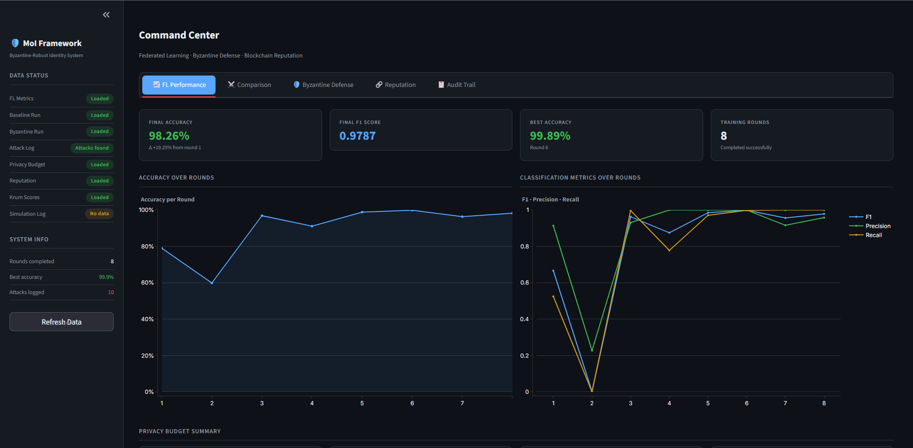
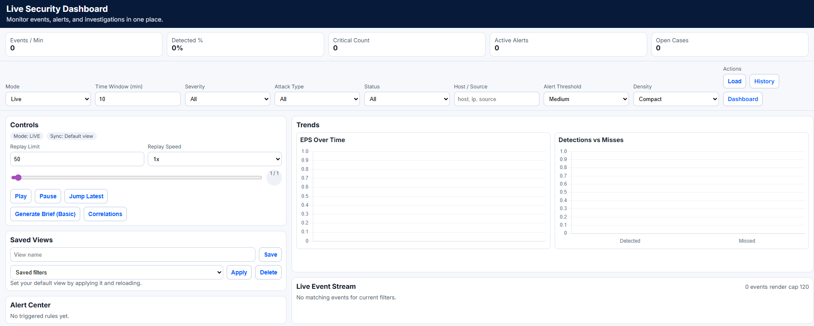

Offensive Security & Security Researcher
Featured Case Studies
EES Security Case Study
Full-stack assessment of Cambodia's Ministry of Interior ANPR system. Discovered critical IDOR exposing 100+ law enforcement bureau records, predictable request IDs enabling time-series enumeration, exposed Spring Boot Actuator, and multiple Android app vulnerabilities. Patched within 24 hours of responsible disclosure.
CSS-GDIN Security Case Study
Identified unauthenticated API endpoint in Cambodia's Government Complaint Support System leaking 1,000+ citizen records. Root cause: Spring Boot default-allow posture with no method-level access control. Responsibly disclosed and patched within 24 hours.
AUPP CTF Platform Security Case Study
Authorized pentest of a university-hosted CTF platform. Uncovered 16 findings across application, API, session management, infrastructure, and DDoS resilience over five structured sessions.
Live & Deployed Projects

Byzantine-Robust Identity Framework
Federated learning command center with Byzantine attack defense, reputation scoring, and privacy budget tracking.

Cyber Kill Chain Tool
Real-time security dashboard with live event streaming, alert correlation, EPS trending, and full replay engine.
Selected Writeups
Willy Wonka Chocolate Factory
anti-debug bypass + 4-stage keygen // SSE4.1 · CRC-16
Bypassed IsDebuggerPresent + PEB flags, then solved four chained validators — S-Box, SSE4.1 dot-product, 16-bit hash, and CRC-16/CCITT — and implemented a full Python keygen.
MalwareTech VM1
Python emulator → safe bytecode execution
Disassembled a custom 8-bit VM's bytecode, mapped its instruction set, and built an emulator to decrypt the payload without running the binary.
The Alchemist's Lock
jz → jnz // skip hash validation
Reversed a non-invertible hash, then bypassed it by patching the conditional jump in IDA Pro rather than solving the math.
Web Machine N7
upload bypass + SQLi → bubble_siphon
Chained a broken form upload bypass with blind SQL injection, then deployed bubble_siphon to automate post-exploitation secret extraction.
Pinned Repositories
Featured tools from GitHub @MoriartyPuth
AURA
Internal testing suite for infrastructure auditing that chains reconnaissance with automated exploit-path discovery, powered by a modular Python engine.
ViewSila-Entropy
Internal testing engine for password auditing, featuring localized linguistic analysis and real-time vulnerability mapping.
ViewBubble Security Suite
Three-phase offensive toolkit for API security research
bubble-scanner
Recon and endpoint discovery. Maps APIs, identifies exposed paths, and locates secrets.
Viewbubble-pop
Hidden parameter discovery and IDOR testing. Probes for vulnerabilities with visual feedback.
Viewbubble-siphon
Post-exploitation validation and data scavenging in hardened Linux environments.
View